Playbook: Intro
The playbook intends to synthesize the other sections (market overview, business modela and ESG to select clear winners and losers, enumerate the table stakes for modern financial services and to recommend a course of action for both greenfield ventures and digital transformations.
Table stakes: Which features constitute the bare minimum?
The table stakes must fulfill three key functions for the client: Inform, Transact and Services.
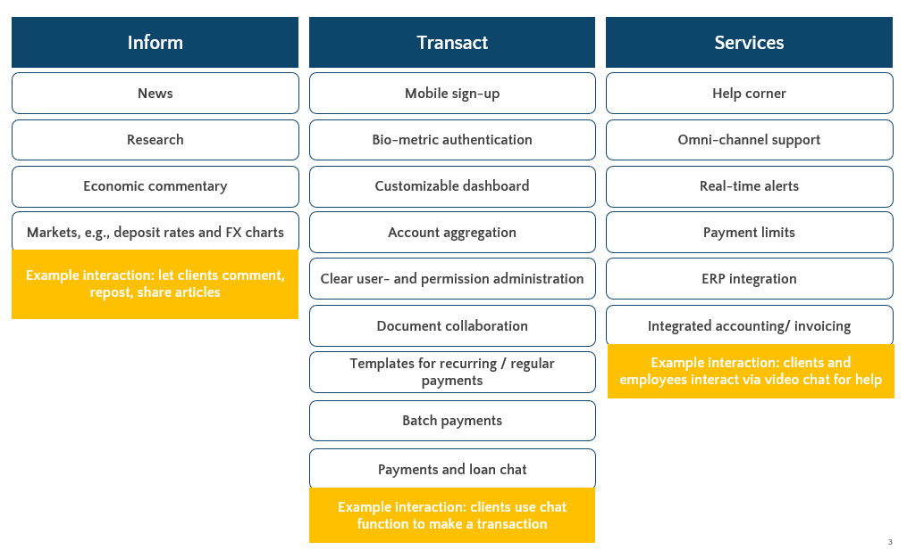
Examples of interaction: Inform
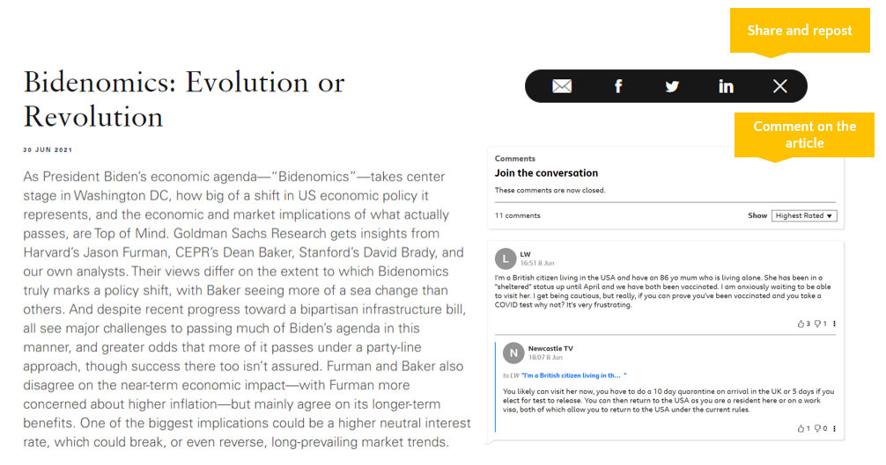Examples of interaction: Transact
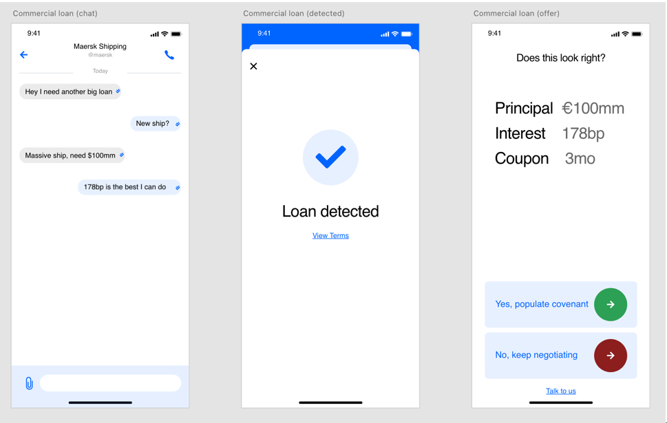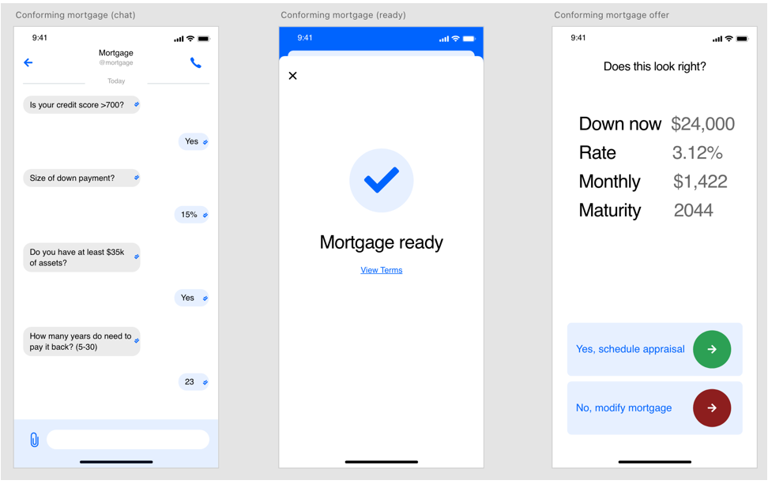
Examples of interaction: Services
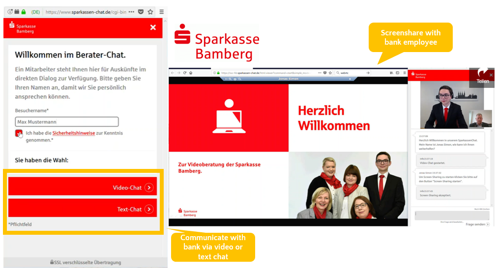Where does the interaction take place?
Most interaction still takes place in the services part (help corner).
How can we change this?
integrate many features within the platform that help and make the life of clients easier, such as account aggregation, loan templates, accounting tools, pdf-document converter as well as many interactive tools.
Our prefered client portal
Playbook: Winning strategies
Mobile first
Mobile is an absolute must-have. Mass affluent customers in established economies continue to gain comfort with executing financial services from their mobile device. And in emerging markets this goes without saying, as many people get smartphones before clean water. The mobile app of any modern financial services company must be a first-class citizen, though more complex tasks may need to take place on the web with more screen real estate.
Give people fair interest (Marcus)
It seems obvious that consumers want more interest, but there is still a huge sum of retail deposits not gaining interest. For example Chase, the biggest retail bank in the US, pays either zero or one basis point of interest on the overwhelming majority of their customers' checking accounts. But Marcus has attracted $97B of deposits as of January 2021, which might not be possible without interest. For the B2B space in financial services, potential clients and customers will be far more savvy with interest rates.
Keep customers in the loop with blog (Wise)
For any fintech capability involving execution, Wise's payment page is the gold standard. Unlike many other apps (in fintech and elsewhere), there is not a single monolithic "sending" bar which does not even progress linearly. Each step of the Wise transfer is enumerated to the customer. For complex executions that occur in multiple steps (for example currency conversion, transfer followed by purchase of a security)
Clearly available support (Marcus) and no phone menu if mass affluent.
Robust security including 2FA
Though we consider 2FA to be table stakes rather than a differentiating, winning strategy, security deserves a mention. RSA cryptography solutions such as OpenSSL and SSH keys are the bare minimum, along with an authenticator app for sign in. For high volume transactions there are many further options such as fingerprint and iris scanning. Note that while many of these security features can now be offered on mobile, it is unexplored territory and may not be suitable for big executions.
Big tech-like design (iOS etc)
As mentioned above in mobile first, even older mass affluent customers (B2C) and clients (B2B) are beginning to show a preference for mobile or tablet (iPad).
Wise
Wise is a winner for two reasons: their sleek and utilitarian frontend and their first-in-class product. We have already covered wise in the payments section. View our user journey here.
Marcus
Marcus is a winner due to its simple yet powerful UI and successful aggregation of pre-existing products. However, much of Marcus' value comes from goodwill of the Goldman Sachs brand and is therefore not reproducible in a greenfield venture. View our Marcus user journey here.
Use cases
HCOB
SEPA: Single Credit Transfer
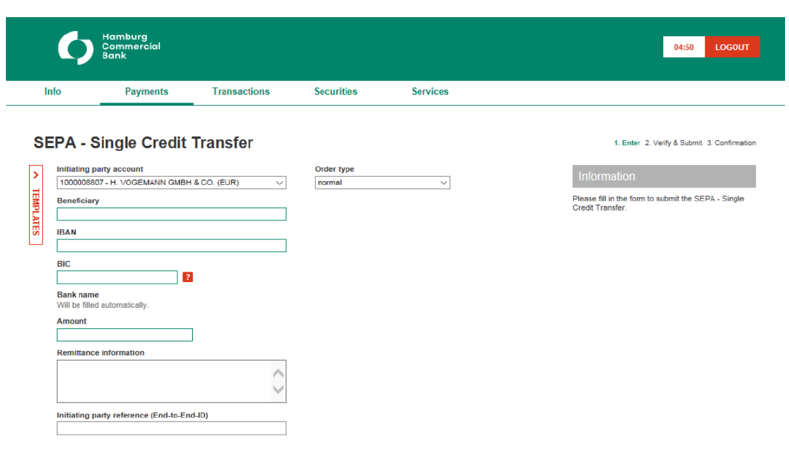SEPA: Single Credit Transfer
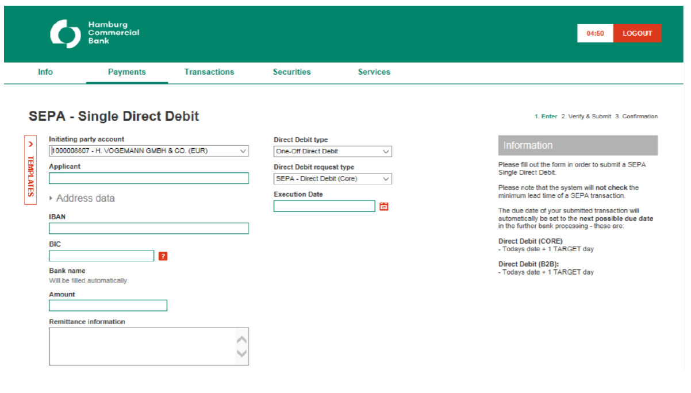SEPA: Foreign payment
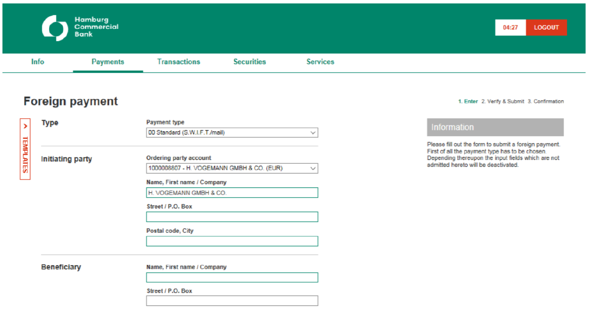Standard Chartered Bank (HKG)
Dashboard View
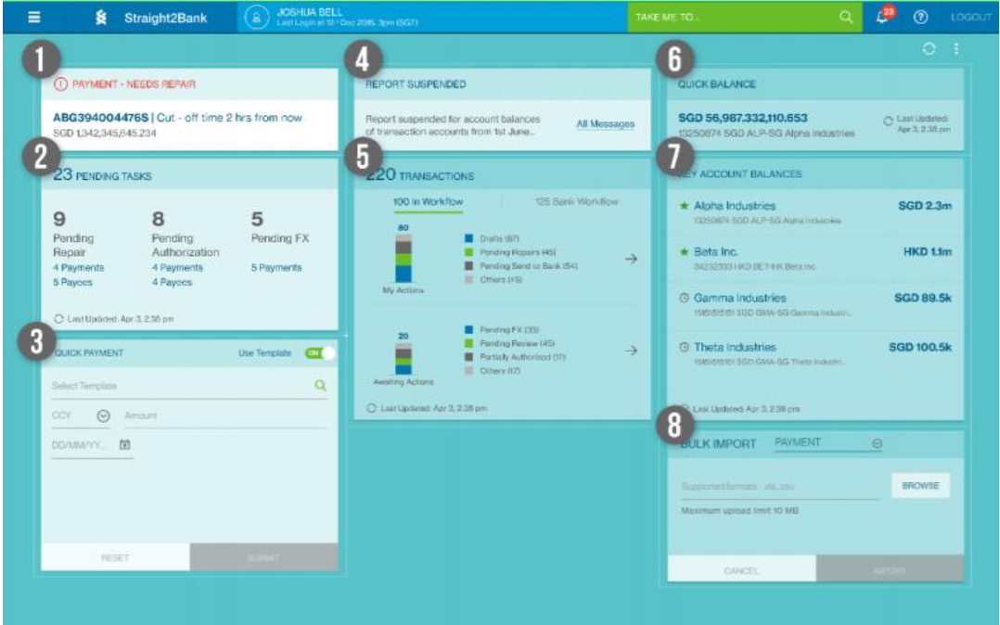Dashboard Features
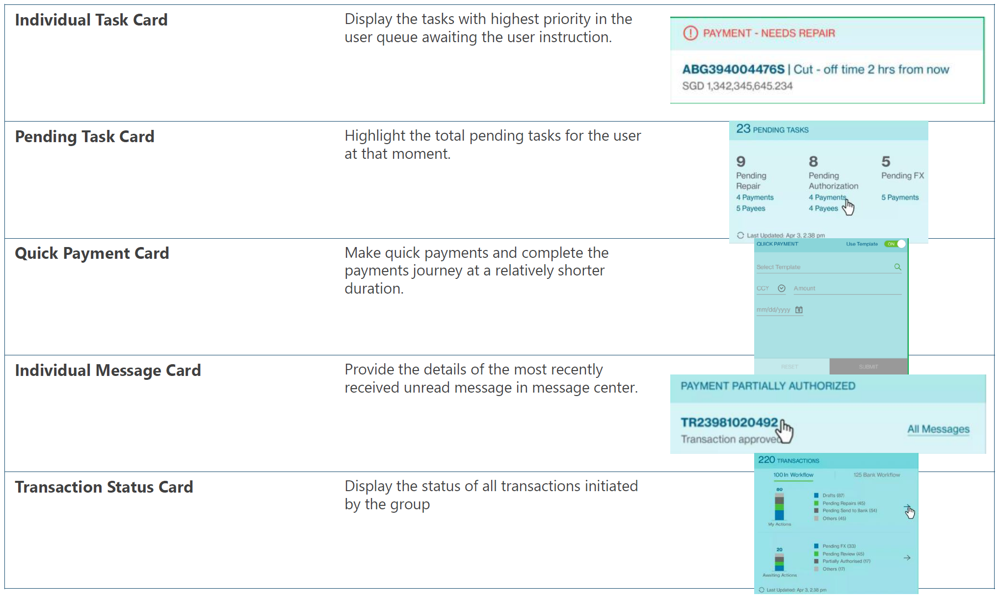 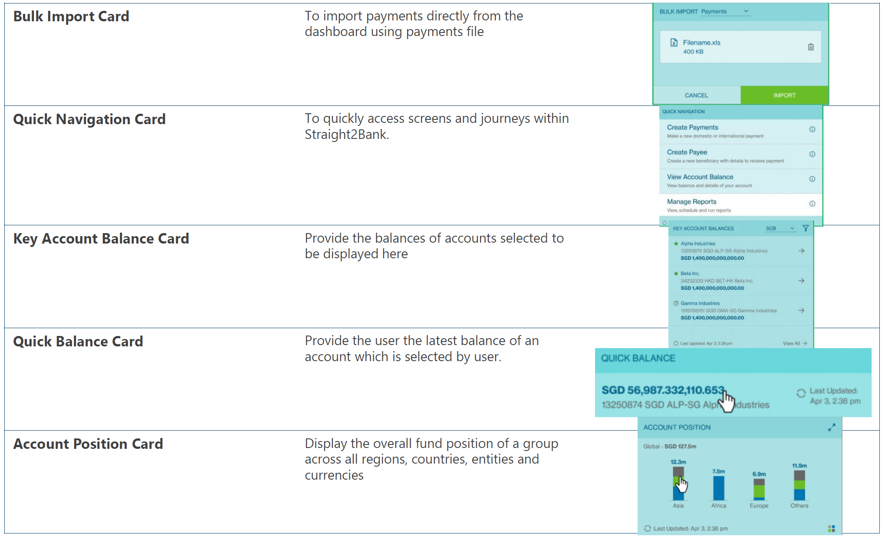Library
Fintech UIs
Wise UIIncumbent UIs
Marcus UIChase QuickDeposit Commercial Guide
HCOB Internet Banking
Stan Chartered Guide
Chase Commercial Banking Quick Deposit Guide
Chase Commercial Loans User Guide
More of our research
Market OverviewMarket Overview 2
Table Stakes and Transact Mockups
Winners and losers